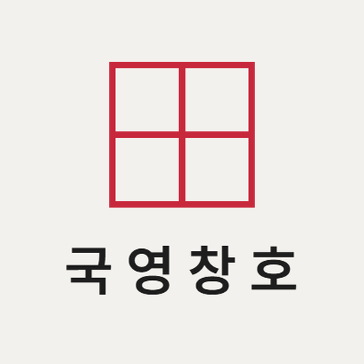

국영창호 견적 접수
샷시 견적 접수 · 로그인 없이 바로 열려요
견적 접수 열기
홈 화면에 아이콘 만들기 (한 번만)
- 사파리로 이 페이지를 열어요.
- 화면 아래 □↑ 공유 버튼을 눌러요.
- 목록을 내려서 '홈 화면에 추가'를 누르고, 오른쪽 위 '추가'를 눌러요.
- 홈 화면에 생긴 국영창호 견적 아이콘으로 열면 돼요.
- 크롬으로 이 페이지를 열어요.
- 위의 '홈 화면에 앱 설치' 버튼이 보이면 눌러요.
- 버튼이 없으면 오른쪽 위 ⋮ → '홈 화면에 추가' 또는 '앱 설치'를 눌러요.
- 홈 화면에 생긴 국영창호 견적 아이콘으로 열면 돼요.
- 크롬으로 이 페이지를 열어요.
- 주소창 오른쪽의 ⊕ 설치 아이콘을 누르거나, 오른쪽 위 ⋮ → '전송, 저장, 공유' → '바로가기 만들기'를 눌러요.
- '창으로 열기'에 체크하고 만들기를 누르면 바탕화면에 아이콘이 생겨요.